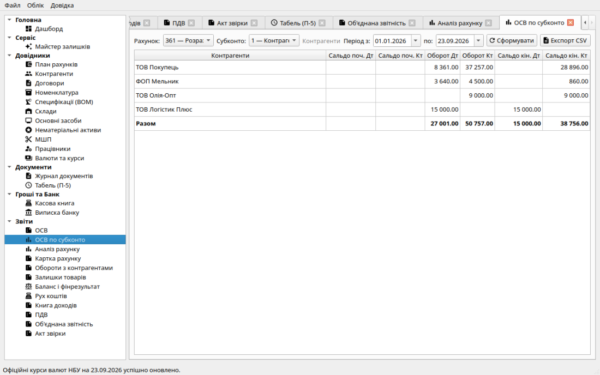
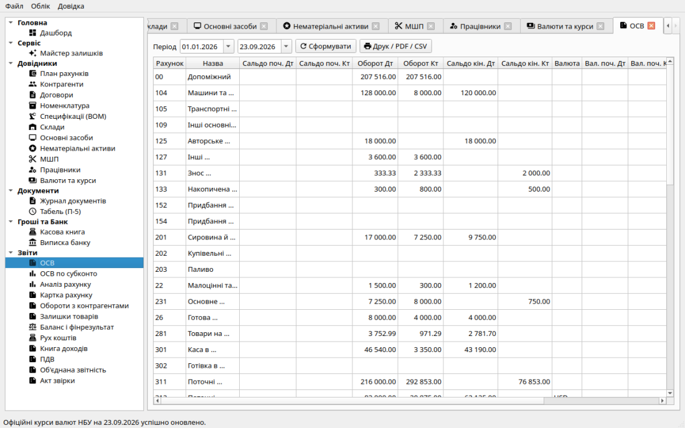
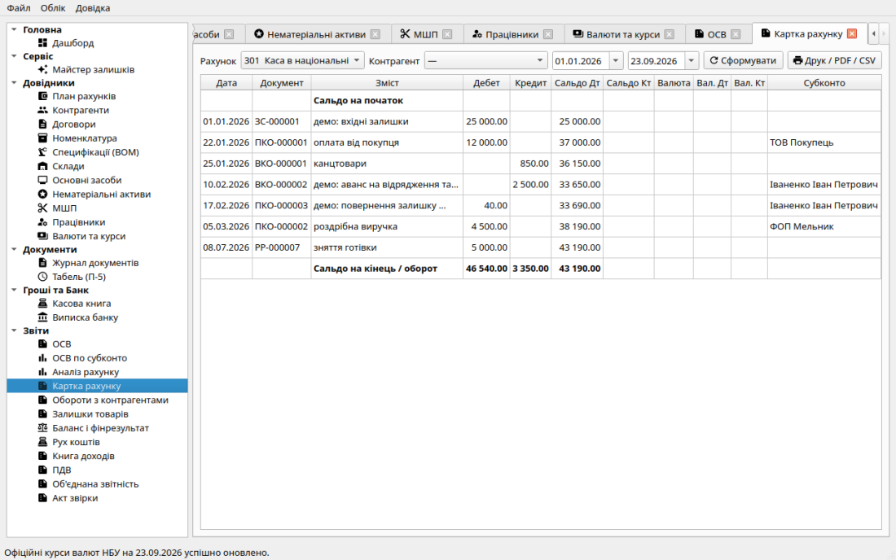
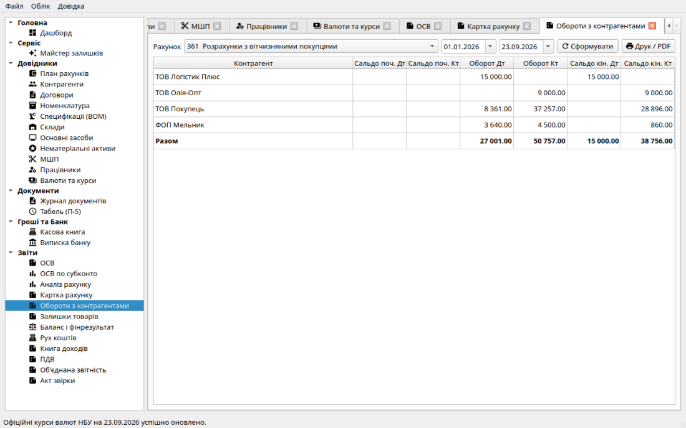
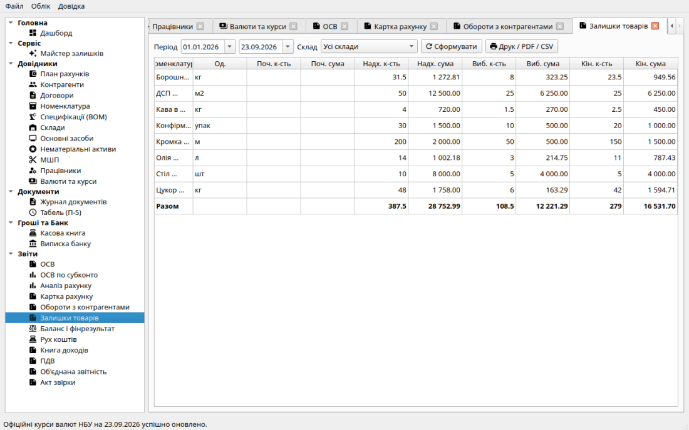
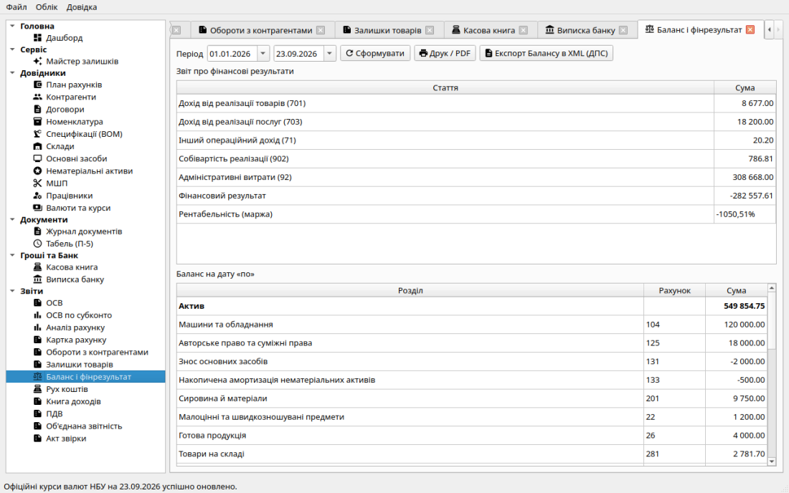
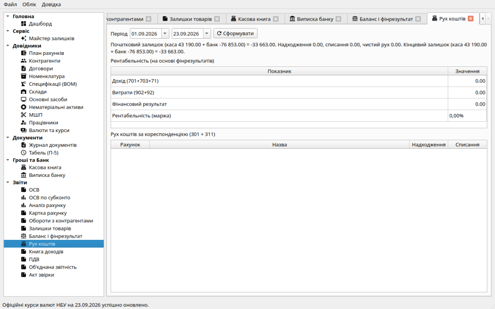
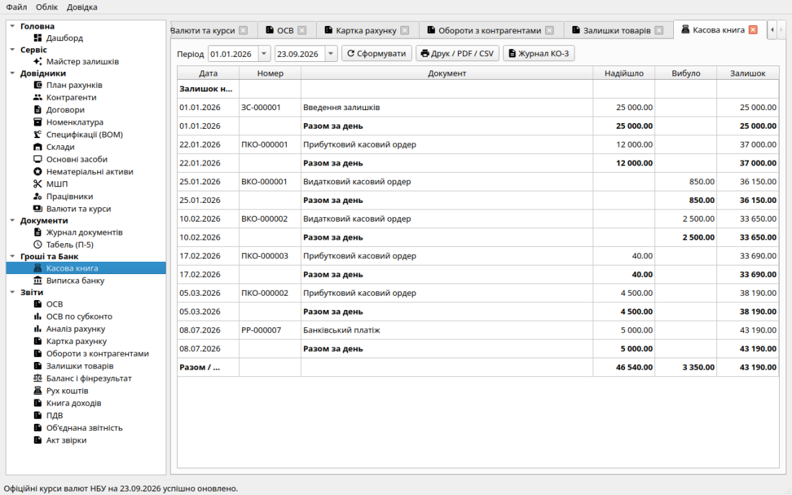

Відомість ПДВ: рядки вихідних і вхідних ПН з датами реєстрації в ЄРПН
та залишками рахунків 643/641.
Відомість ПДВ: рядки вихідних і вхідних ПН з датами реєстрації в ЄРПН
та залишками рахунків 643/641.
Звіти будуються з проведених проводок за обраний період (без окремого зведеного регістра).
ОСВ є основним контрольним звітом бухгалтера. Він відображає стан усіх рахунків Плану рахунків за вибраний період:
Принципи перевірки: сума всіх дебетових оборотів обов'язково дорівнює сумі кредитових оборотів. Підсумкові дебетові та кредитові залишки теж рівні між собою. Відхилення навіть на копійку свідчить про незбалансований запис.
Контекстне меню рядка ОСВ: Картка рахунку, Аналіз рахунку, а для рахунків з налаштованим субконто — ОСВ по субконто.
Звіт «ОСВ по субконто» (меню «Звіти» або ПКМ з ОСВ) показує початкове/кінцеве сальдо та обороти обраного рахунку в розрізі одного аналітичного виміру (субконто 1, 2 або 3):
Прив’язку видів субконто (до трьох на рахунок) можна змінити в Плані рахунків: подвійний клік або ПКМ → «Субконто…». У колонці «Ознаки» видно, які розрізи вже призначені. Змінювати прив’язку може бухгалтер або адміністратор — для касира й режиму перегляду пункт неактивний.
Якщо розріз позначено як обов’язковий, документ без цієї аналітики не проводиться — і це стосується також «Бухгалтерської операції» та «Введення залишків» (наприклад, ручна проводка на 361 вимагає контрагента). Єдиний виняток — згорнуті проводки закриття місяця. Завдяки цьому ОСВ по субконто завжди сходиться з підсумком рахунку.
У картці рахунку колонка «Субконто» показує розкриті назви аналітики Дт/Кт для кожної проводки.

ОСВ по субконто для рахунку з аналітикою (типово 361 за контрагентом).

Оборотно-сальдова відомість з деревоподібним відображенням рахунків, початковими сальдо, оборотами та кінцевими залишками.Детальна хронологічна стрічка всіх проводок за обраним субрахунком та обраним контрагентом (або без фільтра — за всіма операціями):

Картка рахунку 301: хронологія готівкових надходжень та видатків з наростаючим сальдо по кожній операції.Звіт показує дебетові та кредитові обороти, а також сальдо за кожним контрагентом у розрізі розрахункових субрахунків (361, 631, 681, 371). Це зручно для перегляду заборгованості без побудови окремих Актів звірки. Кнопка «Друк / PDF» формує альбомну друковану форму звіту.

Звіт оборотів по контрагентах: зведена таблиця дебіторської та кредиторської заборгованості за обраний період.Звіт фіксує залишки кожної номенклатурної позиції на кінець вибраного інтервалу:
Гарантія узгодженості: підсумкова вартість товарів у цьому звіті повинна збігатися з кінцевим сальдо субрахунку 281 в ОСВ за аналогічний період.

Звіт про залишки товарів: кількість, середня ціна та балансова вартість кожної позиції номенклатури.Фінансова звітність формується згідно з вимогами НП(С)БО 1 «Загальні вимоги до фінансової звітності»:

Звіти «Баланс» та «Фінансові результати»: активи, пасиви, доходи та витрати у стандартному форматі фінансової звітності.Звіт «Рух коштів» (меню «Звіти») показує управлінський рух коштів за касою 301/302 і банком 311/312 за обраний період: початковий і кінцевий залишок, надходження та списання, розріз за кореспондентськими рахунками. Внутрішні переміщення між грошовими рахунками у чистий рух не входять.
Там само і в звіті «Баланс і фінрезультат» відображається рентабельність (маржа): фінансовий результат відносно доходу (701+703+71, разом з курсовими доходами 714). На головній панелі — ті самі показники за поточний місяць.

Управлінський рух коштів (301/302 + 311/312) із рентабельністю за період.

Касова книга КО-4: аркуш-вкладка з надходженнями та видатками за кожний день роботи каси.Спеціалізовані податкові звіти доступні в розділі Облік → Податковий облік:
Відомість ПДВ: рядки вихідних і вхідних ПН з датами реєстрації в ЄРПН
та залишками рахунків 643/641.
Будь-який звіт можна надрукувати або зберегти у форматі PDF кнопкою «Друк»: